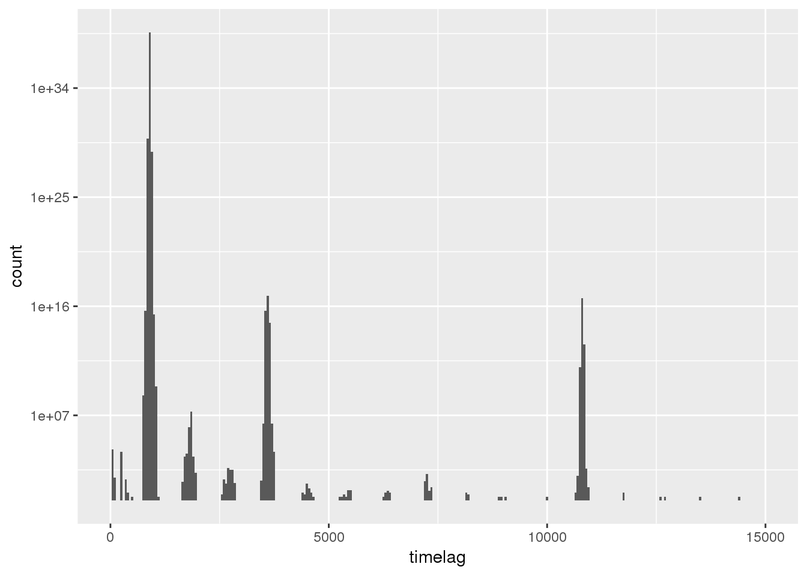
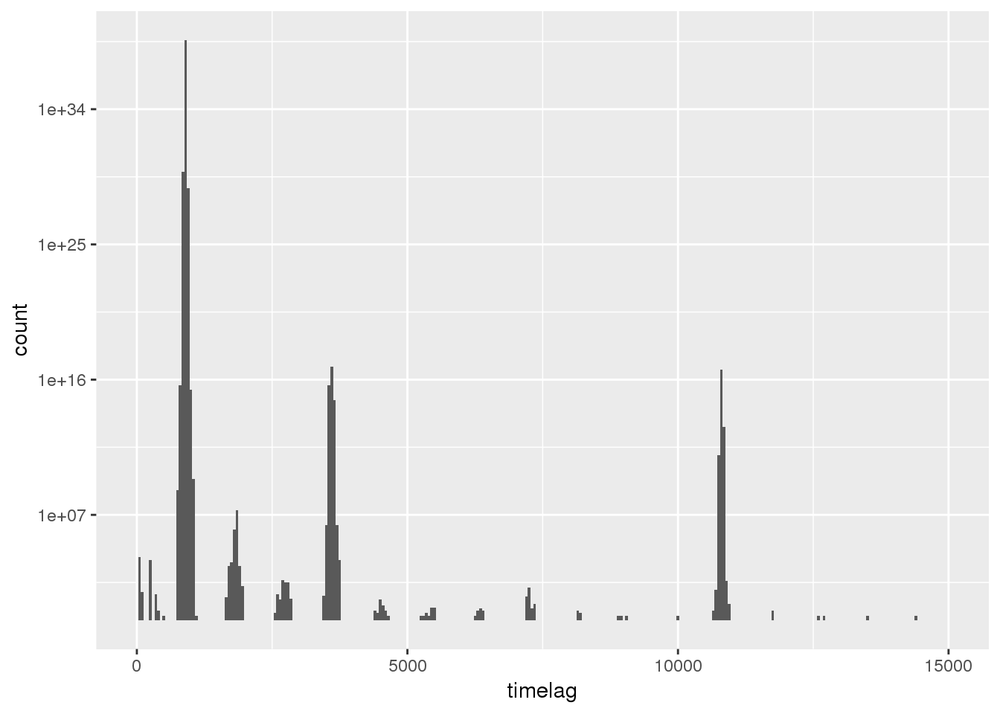
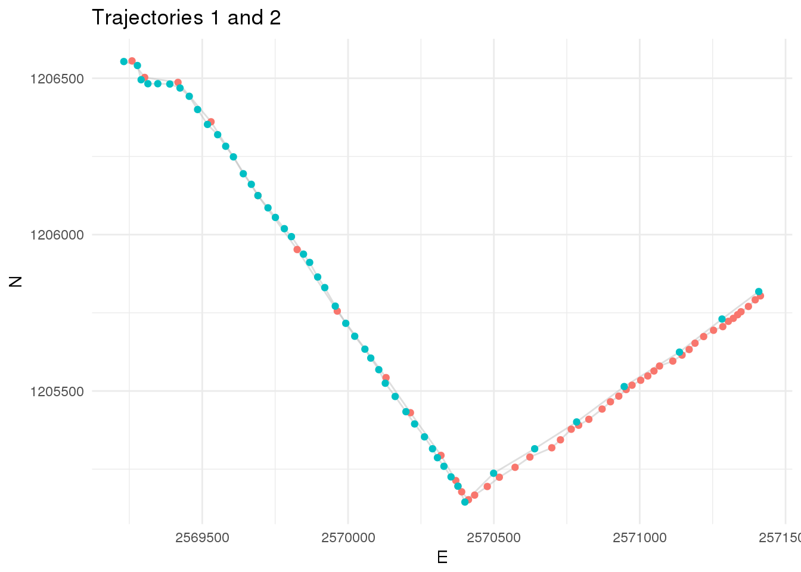
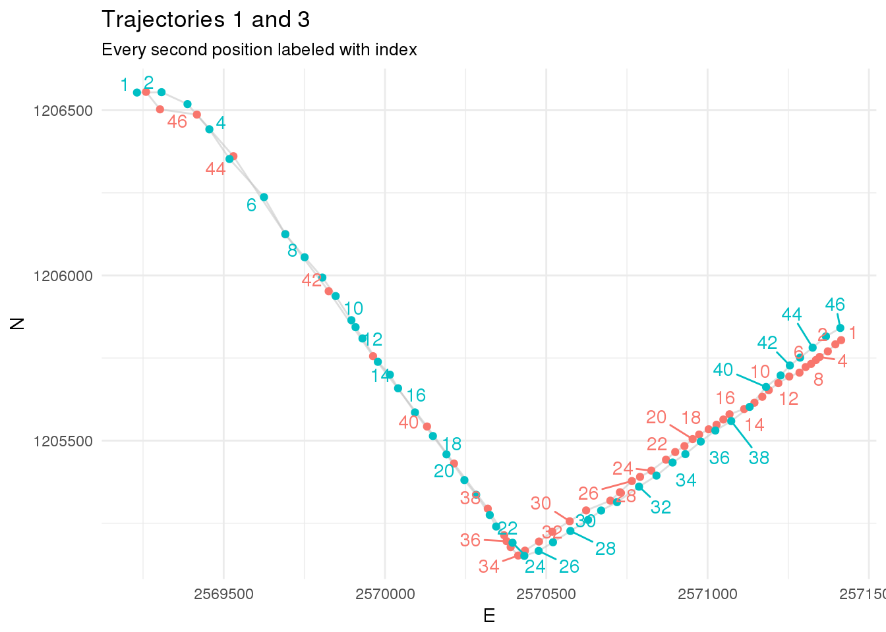
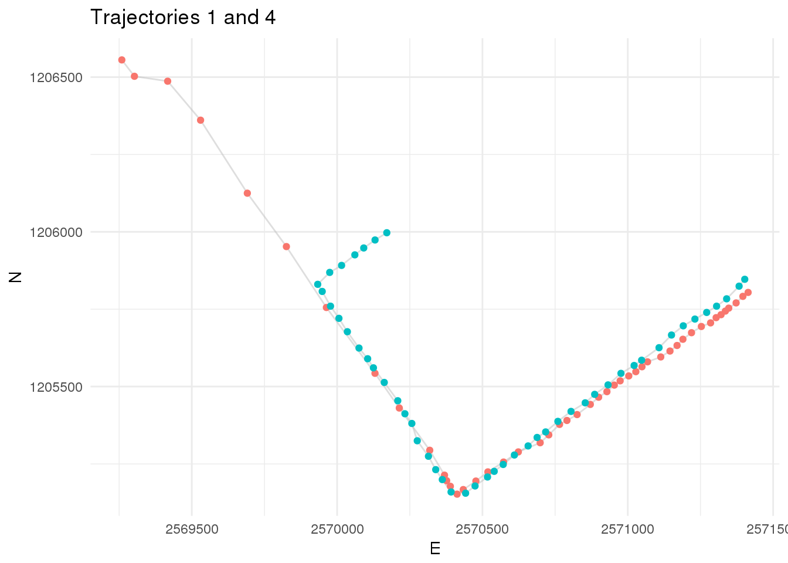

Exercise 2
Learning Outcomes
- You understand the dplyr functions
mutate,summariseandgroup_byand can apply them tosfobjects - You can derive movement parameters (
timelag,steplength,speed) from trajectory data. - You can re-sample your trajectory data for cross scale movement analysis.
Prerequisites
Readings Skills from “R for Data Science” (Wickham and Grolemund 2017):
- RS2.1 Chap3 Data Transformation with
dplyr(31p, 43-76) - RS2.2 Chap10 Relational data with
dplyr(21p, 171-193) - RS2.3 Chap14 Pipes with
magrittr(6p, 261-268)
Readings Theory
- R2.1 Laube and Purves (2011): How fast is a cow? cross - scale analysis of movement data.
Preperation
Install the package zoo to get access to the rolling window functions for last exercise. Also, install the package CMAtools where we have put together some helper functions that simplify some tasks in this course. The package CMAtools is not on CRAN, and we need to install it similar to how we installed the newest version of ggplot last week. Since it is not on the official Git hub page either, but on the ZHAW owned Git hub server, the syntax for installation is slightly different (see code below).
install.packages("zoo")
devtools::install_git("https://github.engineering.zhaw.ch/PatternsTrendsEnvironmentalData/CMAtools.git")Note:
- If you want to understand what the functions in CMAtools do, you can either check the package documentation (
help(package = "CMAtools")) or look at the functions GIThub site. - We will be extending this package regularly throughout this course. Note: You will have to regularly reinstall the package with the code below in order to update your local version of the package.
Open your R Project from last week. Either run your own script from last week or the following lines to bring the data to the form we need it for today exercise.
library(tidyverse)
library(sf)
wildschwein_BE <- read_delim("../CMA_FS2018_Filestorage/wildschwein_BE.csv",",")
wildschwein_BE = st_as_sf(wildschwein_BE, coords = c("Long", "Lat"), crs = 4326,remove = FALSE)
wildschwein_BE <- st_transform(wildschwein_BE, 2056)Demo Tidyverse
Depending on your knowledge of R, getting an overview of the data we imported last week might have been quite a challenge. Surprisingly enough, importing, cleaning and exploring your data can be the most challenging, time consuming part of a project. RStudio and the tidyverse offer many helpful tools to make this part easier (and more fun). You have read chapters on dplyr and magrittr as a preparation for this Exercise. Before we start with the Exercise however, this demo illustrates a simple approach offered by tidyverse which is applicable to sf-objects.
Assume we want to calculate the timelag in between subsequent positions. To achieve this we can use the function difftime() combined with lead() from dplyr. Let’s look at these functions one by one.
difftime
difftime takes two POSIXct values.
now <- Sys.time()
later <- now + 10000
time_difference <- difftime(later,now)You can also specify the unit of the output.
time_difference <- difftime(later,now,units = "mins")difftime returns an object of the Class difftime. However in our case, numeric values would be more handy than the Class difftime. So we’ll wrap the command in as.numeric():
str(time_difference)
## Class 'difftime' atomic [1:1] 167
## ..- attr(*, "units")= chr "mins"time_difference <- as.numeric(difftime(later,now,units = "mins"))
str(time_difference)
## num 167lead() / lag()
lead() and lag() return a vector of the same length as the input, just offset by a specific number of values (default is 1). Consider the following sequence:
numbers <- 1:10
numbers
## [1] 1 2 3 4 5 6 7 8 9 10We can now run lead() and lag() on this sequence to illustrate the output. n = specifies the offset, default = specifies the default value used to “fill” the emerging “empty spaces” of the vector.
lead(numbers)
## [1] 2 3 4 5 6 7 8 9 10 NA
lead(numbers,n = 2)
## [1] 3 4 5 6 7 8 9 10 NA NA
lag(numbers)
## [1] NA 1 2 3 4 5 6 7 8 9
lag(numbers,n = 5)
## [1] NA NA NA NA NA 1 2 3 4 5
lag(numbers,n = 5, default = 0)
## [1] 0 0 0 0 0 1 2 3 4 5This helps us performing operations on subsequent values in a vector (or rows in a table). You can think of this a little bit like a moving temporal window that moves along the trajectory, or down the rows of a table respectively.
mutate()
Using the above functions (difftime() and lead()), we can calculate the time lag, that is, the time difference between subsequent positions:
wildschwein_BE$timelag <- as.numeric(difftime(lead(wildschwein_BE$DatetimeUTC),wildschwein_BE$DatetimeUTC,units = "secs"))We mention wildschwein_BE three times in this function, which is complicated. Instead, we can use mutate() to simplify the syntax:
wildschwein_BE <- mutate(wildschwein_BE,timelag = as.numeric(difftime(lead(DatetimeUTC),DatetimeUTC,units = "secs")))group_by()
Now let’s have a look at the vector created before:
summary(wildschwein_BE$timelag)
## Min. 1st Qu. Median Mean 3rd Qu. Max. NA's
## -65155503 895 900 259 907 49579199 1These values don’t make much sense: some are negative (which should not be the case) and some are very high (which would indicate large data gaps and should not be the case either). The reason for this result is that we did not consider that timelag should just be calculated between subsequent rows of the same individual. We can implement this by using group_by() (just as if calculating the convex hull last week).
wildschwein_BE <- group_by(wildschwein_BE,TierID)After adding this grouping variable, calculating the timelag automatically accounts for the individual trajectories.
wildschwein_BE <- mutate(wildschwein_BE,timelag = as.numeric(difftime(lead(DatetimeUTC),DatetimeUTC,units = "secs")))
summary(wildschwein_BE$timelag)
## Min. 1st Qu. Median Mean 3rd Qu. Max. NA's
## 12 895 900 1203 907 108023 10summarise()
summary() returned the metrics over all individuals. If we want to summarise our data and get metrics per animal, we can use the dplyr function summarise(). In contrast to mutate(), which just adds a new column to the dataset, summarise() “collapses” the data to one row per individual (specified by group_by).
summarise(wildschwein_BE, mean = mean(timelag, na.rm = T))The above operation works fine on normal data.frames, but since wildschwein_BE is also an sf object, summarise actually merges all the points to a multipoint geometry, which takes a long time to calculate. In order to prevent this, we can wrap the sf object in as.data.frame which removes the spatial attribute. Regrettably, it also removes the group_by variable, which we need to set again. The command therefore now reads:
summarise(group_by(as.data.frame(wildschwein_BE),TierID), mean_timelag = mean(timelag, na.rm = T))
## # A tibble: 10 x 2
## TierID mean_timelag
## <chr> <dbl>
## 1 001A 1661.
## 2 001B 900.
## 3 002A 1286.
## 4 005A 1825.
## 5 010A 980.
## 6 010B 1607.
## 7 010C 694.
## 8 011A 2736.
## 9 016A 1412.
## 10 018A 1599.Piping
The code above hard to read, since it has so many nested functions which need to be read from the inside out. In order to make code readable in a more human-friendly way, we can use the piping command %>% from magrittr, which is included in dplyr and the tidyverse. The above code then looks like this:
wildschwein_BE %>% # Take wildschwein_BE...
as.data.frame() %>% # ...convert it to a data.frame...
group_by(TierID) %>% # ...group it by TierID
summarise( # Summarise the data...
mean_timelag = mean(timelag,na.rm = T) # ...by calculating the mean timelag
)
## # A tibble: 10 x 2
## TierID mean_timelag
## <chr> <dbl>
## 1 001A 1661.
## 2 001B 900.
## 3 002A 1286.
## 4 005A 1825.
## 5 010A 980.
## 6 010B 1607.
## 7 010C 694.
## 8 011A 2736.
## 9 016A 1412.
## 10 018A 1599.Bring it all together…
Here is the same approach with a different, smaller dataset:
pigs = data.frame(
TierID=c(8001,8003,8004,8005,8800,8820,3000,3001,3002,3003,8330,7222),
sex=c("M","M","M","F","M","M","F","F","M","F","M","F"),
age=c("A","A","J","A","J","J","J","A","J","J","A","A"),
weight=c(50.755,43.409,12.000,16.787,20.987,25.765,22.0122,21.343,12.532,54.32,11.027,88.08)
)
pigs
## TierID sex age weight
## 1 8001 M A 50.7550
## 2 8003 M A 43.4090
## 3 8004 M J 12.0000
## 4 8005 F A 16.7870
## 5 8800 M J 20.9870
## 6 8820 M J 25.7650
## 7 3000 F J 22.0122
## 8 3001 F A 21.3430
## 9 3002 M J 12.5320
## 10 3003 F J 54.3200
## 11 8330 M A 11.0270
## 12 7222 F A 88.0800
pigs %>%
summarise(
mean_weight = mean(weight)
)
## mean_weight
## 1 31.58477
pigs %>%
group_by(sex) %>%
summarise(
mean_weight = mean(weight)
)
## # A tibble: 2 x 2
## sex mean_weight
## <fct> <dbl>
## 1 F 40.5
## 2 M 25.2
pigs %>%
group_by(sex,age) %>%
summarise(
mean_weight = mean(weight)
)
## # A tibble: 4 x 3
## # Groups: sex [?]
## sex age mean_weight
## <fct> <fct> <dbl>
## 1 F A 42.1
## 2 F J 38.2
## 3 M A 35.1
## 4 M J 17.8Tasks and Inputs
Task 1: Getting an overview
Calculate the time difference between subsequent rows as described in the demo (column timelag) First, inspect your data in more detail. Try to answer the following questions:
- How many individuals were tracked?
- How long were the individual tracked? Are there gaps?
- Were all individuals tracked concurrently or sequentially?
- What is the temporal sampling interval between the locations?
Here are some exemplary visualisation you could produce to answer these questions. Can you now answer the above questions?  

Input: Geometry as columns
Last week, we transformed our data from a data.frame to an sf object. This turned our Lat/Long Columns into a single geometry (list) column. While this is very handy for many spatial operations, accessing the coordinates directly becomes difficult. We therefore suggest storing the information twice, once as a geometry and once as a numeric value. We already have WGS84 as numeric columns, but not yet the CH1903+ LV95 coordinates.
## # A tibble: 10 x 6
## TierID DatetimeUTC Lat Long timelag
## <chr> <dttm> <dbl> <dbl> <dbl>
## 1 001A 2014-05-28 21:01:14 47.0 7.05 844
## 2 001A 2014-05-28 21:15:18 47.0 7.05 895
## 3 001A 2014-05-28 21:30:13 47.0 7.05 898
## 4 001A 2014-05-28 21:45:11 47.0 7.05 922
## 5 001A 2014-05-28 22:00:33 47.0 7.05 883
## 6 001A 2014-05-28 22:15:16 47.0 7.05 898
## 7 001A 2014-05-28 22:30:14 47.0 7.05 895
## 8 001A 2014-05-28 22:45:09 47.0 7.05 903
## 9 001A 2014-05-28 23:00:12 47.0 7.05 896
## 10 001A 2014-05-28 23:15:08 47.0 7.05 908
## # ... with 1 more variable: geometry <POINT [m]>Let’s do the same for the CH1903+ LV95-values, as we will need the values in columns for our next task. First, we have to extract the Coordinates using st_coordinates(). We can store these values in a new variable and display them:
# Store coordinates in a new variable
coordinates <- st_coordinates(wildschwein_BE)
head(coordinates)
## X Y
## 1 2570390 1204820
## 2 2570389 1204826
## 3 2570391 1204821
## 4 2570388 1204826
## 5 2570388 1204819
## 6 2570384 1204828Note that that the column are named X and Y, while CH1903+ LV95 names the Axes E and N: let’s rename the columns appropriately. After this, we can use cbind() to “glue” the columns to our original sf-object.
colnames(coordinates) <- c("E","N")
wildschwein_BE <- cbind(wildschwein_BE,coordinates)Task 2: Deriving movement parameters I: Euclidean Distance and Speed
In this task we will derive some additional movement parameters from our trajectories. Note, so far our trajectories only consist of a list of time-stamped spatial locations. So let’s calculate the animal’s speed based on the distance and timelag in between two subsequent locations.
- You can use the function
euclid()from theCMAtoolspackage to calculate Euclidean distances between subsequent rows. Use?euclidto see what the function expects and returns. - use
lead(E,1)to address the the rown+1 - make sure you’re clear in what unit you are measuring speed. Meters per second is a SI base unit, but might be unhandy for the speeds travelled by wild boar.
Task 3: Cross-scale movement analysis
Laube and Purves (2011) analyse animal movement across different scales (see below). We will do the same on a subset of our data.
Laube and Purves (2011): Black points are used in calculation of movement parameters (e.g. speed) at a given termporal scale.
Filter
To do so, filter your data to positions with a sampling interval between 40 and 80 seconds and save it to a new variable (we will use wildschwein_BE_1). From this subset, take the first 100 positions5 for the following task.
If you like to stick to the tidyverse approach, you can use slice() to subset the dataset by row number. Slice takes an integer vector. Eg: slice(dataset, 1:10), returns the first 10 rows of a dataset, slice(dataset, c(1,5,10)) returns the 1st, 5th and 10th value of a dataset.
Resample
Now manually reduce the granularity of our sampling interval by selecting samples every 3rd, 6th and 9th minute.
- You can use
slice()again for this task by providing an integer vector (withseq()) in the desired frequency - Save each re-sampled dataset in a new variable. We will use
wildschwein_BE_3,wildschwein_BE_6andwildschwein_BE_9.
You should now have 4 datasets with different number of rows:
nrow(wildschwein_BE_1)
## [1] 99
nrow(wildschwein_BE_3)
## [1] 33
nrow(wildschwein_BE_6)
## [1] 17
nrow(wildschwein_BE_9)
## [1] 11Update derived parameters
timelag, steplength and speed now have to be recalculated for the three re-sampled datasets. Do so as we illustrated in the Chapter Demo.
Visualize
Compare the speeds in a line plot and visualize the trajectories in a map (see examples below). Interpret the line plot, what do the different lines for the different temporal granularities tell you?
We’ve stored the geographic location of our point in the trajectory in three different forms in our dataset. Once as a geometry, once as E/N and once as lat/long. In our view, it is most practical to use the E/N (integer) columns of our data to map them in this task
geom_sf()does not plot lines, just points- Therefore, use
geom_path()andgeom_point()rather thangeom_sf()withinggplot - In contrast to
geom_sf(), you have to explicitly specify thex/ycolumns (in our caseE/N) withgeom_path()/geom_point() geom_line()does not work when mapping trajectory data, since it connects the observations in order of the variable on the x axis.geom_path()connects the observations in the order in which they appear in the data

Task 4: Deriving movement parameters II: Rolling window functions
A different approach would be to smoothen the derived parameters using a moving window function. The zoo package offers a variate of moving window functions (roll_*). Use roll_mean() to smooth the calculated speed. Familiarise yourself with this function by working on some dummy data, for example:
{kind=link}
library(zoo)
example <- rnorm(10)
rollmean(example,k = 3,fill = NA,align = "left")
## [1] -0.1772767 -0.5443912 -0.6438929 -0.6339761 -0.1463655 0.2187269
## [7] 0.7299656 0.5359389 NA NA
rollmean(example,k = 4,fill = NA,align = "left")
## [1] -0.4898570 -0.4189430 -0.5908527 -0.4666736 0.1533956 0.4395412
## [7] 0.4107626 NA NA NANow run rollmeanon the speed variable of the subset (wildschwein_BE_1). Visualize the output from your moving windows and compare different window sizes (k =).
Task 5 (optional): Calculate turning angles
Just like we did with speed in tasks 2 - 4, we could do the same with turning angles of the trajectory. If you like a challenge, try to calculate these with the same approach! CMAtools has the function turning_angle()6. Here is an example on some dummy data. We represent the turning angle as the clockwise, angular offset from moving straight ahead.

Solutions
Preperation
library(tidyverse)
library(sf)
wildschwein_BE <- read_delim("../CMA_FS2018_Filestorage/wildschwein_BE.csv",",")
wildschwein_BE = st_as_sf(wildschwein_BE, coords = c("Long", "Lat"), crs = 4326,remove = FALSE)
wildschwein_BE <- st_transform(wildschwein_BE, 2056)Demo Tidyverse
now <- Sys.time()
later <- now + 10000
time_difference <- difftime(later,now)
time_difference
time_difference <- difftime(later,now,units = "mins")
time_difference
str(time_difference)
time_difference <- as.numeric(difftime(later,now,units = "mins"))
str(time_difference)
numbers <- 1:10
numbers
lead(numbers)
lead(numbers,n = 2)
lag(numbers)
lag(numbers,n = 5)
lag(numbers,n = 5, default = 0)
lead(numbers)-numbers
wildschwein_BE$timelag <- as.numeric(difftime(lead(wildschwein_BE$DatetimeUTC),wildschwein_BE$DatetimeUTC,units = "secs"))
wildschwein_BE <- mutate(wildschwein_BE,timelag = as.numeric(difftime(lead(DatetimeUTC),DatetimeUTC,units = "secs")))
summary(wildschwein_BE$timelag)
wildschwein_BE <- group_by(wildschwein_BE,TierID)
wildschwein_BE <- mutate(wildschwein_BE,timelag = as.numeric(difftime(lead(DatetimeUTC),DatetimeUTC,units = "secs")))
summary(wildschwein_BE$timelag)
## summarise(wildschwein_BE, mean = mean(timelag, na.rm = T))
summarise(group_by(as.data.frame(wildschwein_BE),TierID), mean_timelag = mean(timelag, na.rm = T))
wildschwein_BE %>% # Take wildschwein_BE...
as.data.frame() %>% # ...convert it to a data.frame...
group_by(TierID) %>% # ...group it by TierID
summarise( # Summarise the data...
mean_timelag = mean(timelag,na.rm = T) # ...by calculating the mean timelag
)
pigs = data.frame(
TierID=c(8001,8003,8004,8005,8800,8820,3000,3001,3002,3003,8330,7222),
sex=c("M","M","M","F","M","M","F","F","M","F","M","F"),
age=c("A","A","J","A","J","J","J","A","J","J","A","A"),
weight=c(50.755,43.409,12.000,16.787,20.987,25.765,22.0122,21.343,12.532,54.32,11.027,88.08)
)
pigs
pigs %>%
summarise(
mean_weight = mean(weight)
)
pigs %>%
group_by(sex) %>%
summarise(
mean_weight = mean(weight)
)
pigs %>%
group_by(sex,age) %>%
summarise(
mean_weight = mean(weight)
)Task 1
wildschwein_BE <- wildschwein_BE %>%
mutate(timelag = as.numeric(difftime(lead(DatetimeUTC),DatetimeUTC,units = "secs")))
ggplot(wildschwein_BE, aes(DatetimeUTC,TierID)) +
geom_line()
ggplot(wildschwein_BE, aes(timelag)) +
geom_histogram(binwidth = 50) +
lims(x = c(0,15000)) +
scale_y_log10()
wildschwein_BE[1:50,] %>%
ggplot(aes(DatetimeUTC,timelag)) +
geom_line() +
geom_point()Input
wildschwein_BE %>%
dplyr::select(-CollarID,-TierName) %>%
as.data.frame() %>%
slice(1:10)
# Store coordinates in a new variable
coordinates <- st_coordinates(wildschwein_BE)
head(coordinates)
colnames(coordinates) <- c("E","N")
wildschwein_BE <- cbind(wildschwein_BE,coordinates)Task 2
library(CMAtools)
wildschwein_BE <- wildschwein_BE %>%
group_by(TierID) %>%
mutate(
steplength = euclid(lead(E, 1),lead(N, 1),E,N),
speed = steplength/timelag
)Task 3
wildschwein_BE_1 <- wildschwein_BE%>%
filter(timelag > 40 & timelag < 80) %>%
slice(2:100)
wildschwein_BE_3 <- wildschwein_BE_1 %>%
slice(seq(1,nrow(.),3)) # the dot (".") represents the piped dataset
wildschwein_BE_6 <- wildschwein_BE_1 %>%
slice(seq(1,nrow(.),6))
wildschwein_BE_9 <- wildschwein_BE_1 %>%
slice(seq(1,nrow(.),9))
nrow(wildschwein_BE_1)
nrow(wildschwein_BE_3)
nrow(wildschwein_BE_6)
nrow(wildschwein_BE_9)
wildschwein_BE_3 <- wildschwein_BE_3 %>%
mutate(
timelag = as.numeric(difftime(lead(DatetimeUTC),DatetimeUTC,units = "secs")),
steplength = euclid(lead(E, 1),lead(N, 1),E,N),
speed = steplength/timelag
)
wildschwein_BE_6 <- wildschwein_BE_6 %>%
mutate(
timelag = as.numeric(difftime(lead(DatetimeUTC),DatetimeUTC,units = "secs")),
steplength = euclid(lead(E, 1),lead(N, 1),E,N),
speed = steplength/timelag
)
wildschwein_BE_9 <- wildschwein_BE_9 %>%
mutate(
timelag = as.numeric(difftime(lead(DatetimeUTC),DatetimeUTC,units = "secs")),
steplength = euclid(lead(E, 1),lead(N, 1),E,N),
speed = steplength/timelag
)
ggplot() +
geom_point(data = wildschwein_BE_1, aes(E,N, colour = "1 minute"), alpha = 0.2) +
geom_path(data = wildschwein_BE_1, aes(E,N, colour = "1 minute"), alpha = 0.2) +
geom_point(data = wildschwein_BE_3, aes(E,N, colour = "3 minutes")) +
geom_path(data = wildschwein_BE_3, aes(E,N, colour = "3 minutes")) +
labs(color="Trajectory", title = "Comparing original- with 3 minutes-resampled data") +
theme_minimal()
ggplot() +
geom_point(data = wildschwein_BE_1, aes(E,N, colour = "1 minute"), alpha = 0.2) +
geom_path(data = wildschwein_BE_1, aes(E,N, colour = "1 minute"), alpha = 0.2) +
geom_point(data = wildschwein_BE_6, aes(E,N, colour = "6 minutes")) +
geom_path(data = wildschwein_BE_6, aes(E,N, colour = "6 minutes")) +
labs(color="Trajectory", title = "Comparing original- with 6 minutes-resampled data") +
theme_minimal()
ggplot() +
geom_point(data = wildschwein_BE_1, aes(E,N, colour = "1 minute"), alpha = 0.2) +
geom_path(data = wildschwein_BE_1, aes(E,N, colour = "1 minute"), alpha = 0.2) +
geom_point(data = wildschwein_BE_9, aes(E,N, colour = "9 minutes")) +
geom_path(data = wildschwein_BE_9, aes(E,N, colour = "9 minutes"))+
labs(color="Trajectory", title = "Comparing original- with 9 minutes-resampled data") +
theme_minimal()
ggplot() +
geom_line(data = wildschwein_BE_1, aes(DatetimeUTC,speed, colour = "1 minute")) +
geom_line(data = wildschwein_BE_3, aes(DatetimeUTC,speed, colour = "3 minutes")) +
geom_line(data = wildschwein_BE_6, aes(DatetimeUTC,speed, colour = "6 minutes")) +
geom_line(data = wildschwein_BE_9, aes(DatetimeUTC,speed, colour = "9 minutes")) +
labs(x = "Time",y = "Speed (m/s)", title = "Comparing derived speed at different sampling intervals") +
theme_minimal()Task 4
library(zoo)
example <- rnorm(10)
rollmean(example,k = 3,fill = NA,align = "left")
rollmean(example,k = 4,fill = NA,align = "left")
wildschwein_BE_1 <- wildschwein_BE_1 %>%
mutate(
speed3 = rollmean(speed,3,NA,align = "left"),
speed6 = rollmean(speed,6,NA,align = "left"),
speed9 = rollmean(speed,9,NA,align = "left")
)
wildschwein_BE_1 %>%
gather(key,val,c(speed,speed3,speed6,speed9)) %>%
ggplot(aes(DatetimeUTC,val,colour = key,group = key)) +
# geom_point() +
geom_line() Task 5
library(grid) # just for the arrows
set.seed(20)
data.frame(x = cumsum(rnorm(10)),y = cumsum(rnorm(10))) %>%
mutate(angle = as.integer(turning_angle(x,y))) %>%
ggplot(aes(x,y)) +
geom_segment(aes(x = lag(x), y = lag(y), xend = x,yend = y),arrow = arrow(length = unit(0.5,"cm"))) +
geom_label(aes(label = paste0(angle,"°")),alpha = 0.4,nudge_x = 0.2, nudge_y = 0.2) +
coord_equal()df <- df %>% mutate( nMinus2 = euclid(lag(X, 2),lag(Y, 2),X,Y), # distance to pos -10 minutes nMinus1 = euclid(lag(X, 1),lag(Y, 1),X,Y), # distance to pos - 5 minutes nPlus1 = euclid(X,Y,lead(X, 1),lead(Y, 1)), # distance to pos + 5 mintues nPlus2 = euclid(X,Y,lead(X, 2),lead(Y, 2)) # distance to pos +10 minutes )
References
Wickham, Hadley, and Garrett Grolemund. 2017. R for Data Science: Import, Tidy, Transform, Visualize, and Model Data. 1st ed. O’Reilly Media, Inc.
Laube, Patrick, and Ross S. Purves. 2011. “How Fast Is a Cow? Cross - Scale Analysis of Movement Data.” Transactions in GIS 15 (3): 401–18. doi:10.1111/j.1467-9671.2011.01256.x.
In the solution (and the graphics), we actually use locations 2-100 for aesthetical reasons↩
We haven’t tested the function extensively yet and are happy for feedback. If you want to have a look at the function, check our Git hub site↩